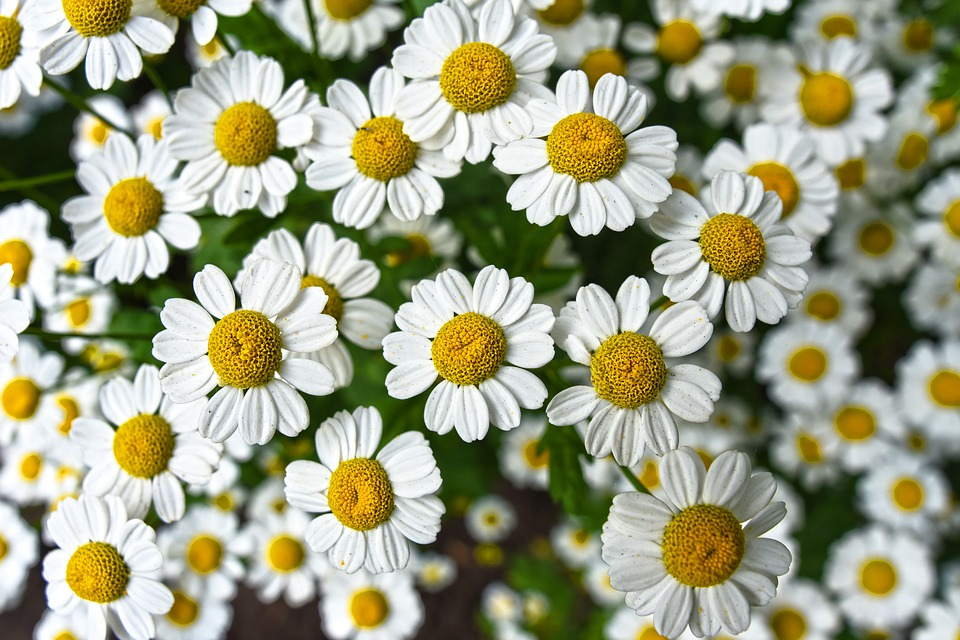
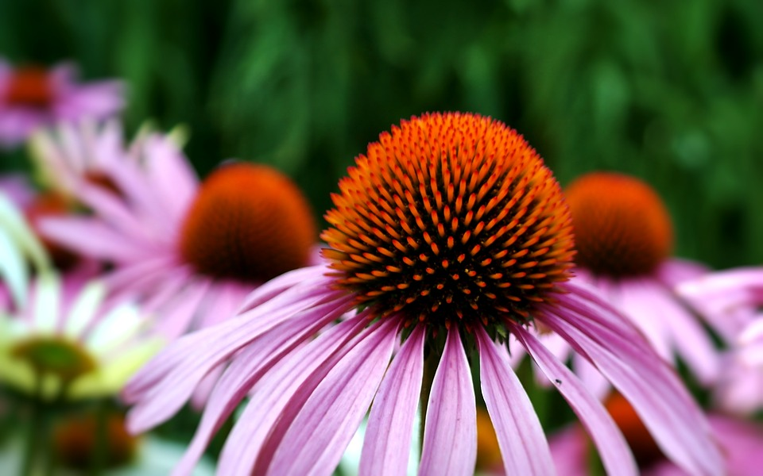
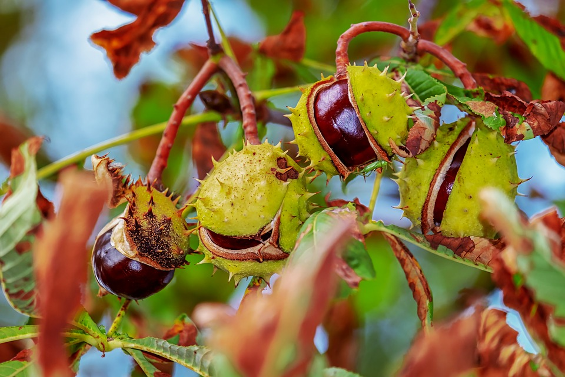
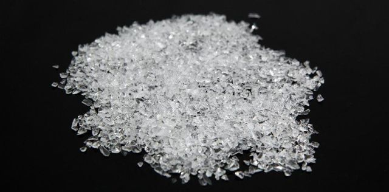

-це м'який очищуючий засіб
- "Почни свою історію з нового листа..." -
Перешкоджає росту патогенних мікроорганізмів
Запобігає дисбалансу
Флори при лікуванні антибіотиками.
Знімає біль, подразнення, свербіж тa печіння.
Відновлює баланс рН.
Пpизначений для використання:
підтримуюча терапія
профілактика рецидивуючих бактеріальних інфекцій
поліпшення симптомів
Склад:
Біоактивні рослинні екстракти:
екстракт ромашки – 0,2 г (g),
екстракт ехінацеї – 0,1 г (g),
екстракт кінського каштана – 0,012 г (g),
лактоза – 0,913 г(g),
діоксид кремнію – 0,4 г (g).
Чому потрібно обрати нас?
Завдяки своєму комплексному складу Мастрелле Флора плюс знижує тa врівноважує рН до фізіологічного значення (рН <4,5). Пребіотичний комплекс забезпечує поживні речовини, які стимулюють ріст лактобацил тa відновлюють захисну біоплівку, що запобігає зростанню кількості патогенних бактерій і грибів, подібних до Candida. Вітамін Е і гіалуронова кислота утворюють плівку зі зволожуючими тa регенеруючими властивостями, що запобігає подразненню тa печінню.